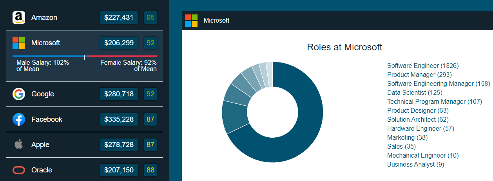
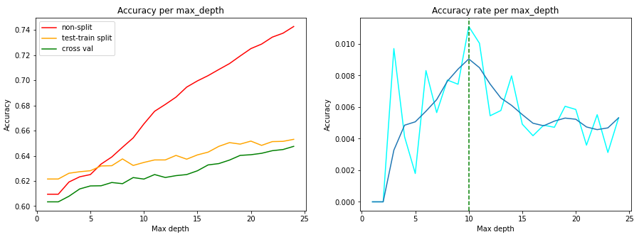

MY PROJECTS
CHRIS MURDOCH

Waypoint
Java JSP
HTML/CSS/JS
Heroku
Waypoint is a videogame exploration site, built using Java Server Pages and pulling data from the RAWG API.
Real-Time Procedural Generation
C++
UE4
Building from World Engine, I researched, designed and implemented RTPG in UE4 as part of my honours thesis at Heriot-Watt.
3D Modelling
C++
OpenGL
UE4
Maya
As part of a university coursework, I modelled a scene in Maya, animated it in UE4, and programmed a custom renderer in OpenGL.

STEM Pay Equality Tool
HTML/CSS/JS
D3
For a data visualisation course in my final year, I designed a site that shows different equality metrics for the salaries provided by top tech companies.
Automata Sandbox
HTML/CSS/JS
Automata Sandbox is a site where users can explore and modify different classical cellular automata algorithms and watch them change in real time.

Chess Match Analysis
Python
ML
As part of a data mining course in fourth year, I developed a Jupyter Notebook analysing chess match data using different classical and machine learning algorithms.